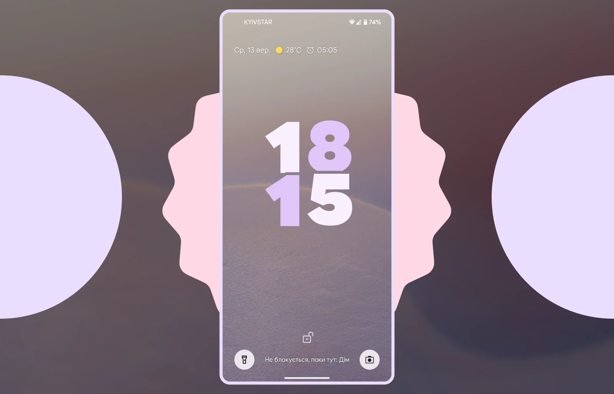
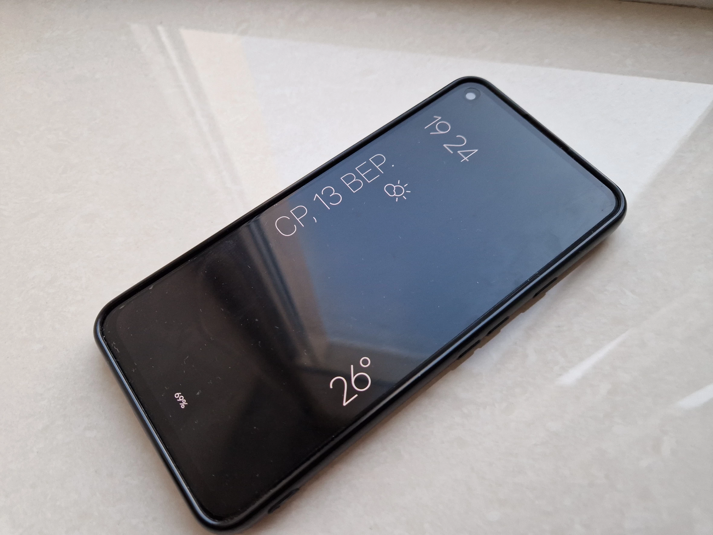
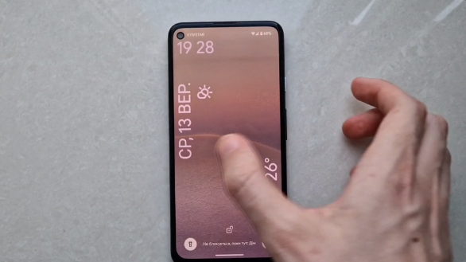
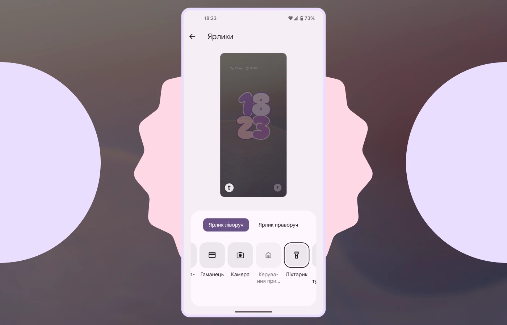
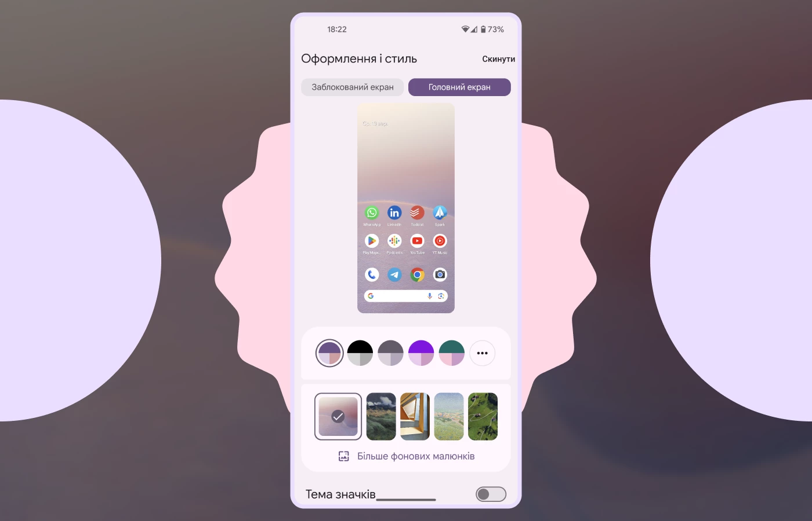

Огляд на новий Android 14. Що нового?
4 жовтня 2023 року відбудеться презентація Google, на якій нам мають показати нову лінійку смартфонів Pixel 8 та випустити стабільну версію Android 14. Як ви вже зрозуміли, мова в цій статті піде не про смартфони, а саме про операційну систему від Google. Реліз Android 14 був намічений на 5 вересня 2023 року, проте з невідомих причин Google його відклали та, ймовірно, перенесли його до власної презентації. Проте я все ж не витримав та вирішив написати статтю про Android 14 вже зараз, поставивши на свій Google Pixel 4a 5G останню бета-версію системи. Та перед початком я вам все ж раджу ознайомитись з моєю першою статтею про Android 13, де я оглядав її з точки зору зручності використання.
Екран блокування
Почнімо з найголовнішого оновлення — екрану блокування. Першим, що ми бачимо те, що шрифт екрана блокування у нас змінився. Зверху ми бачимо дату, погоду та найближчий будильник в одному рядку, в Android 13 ця інформація була розташована в різних рядках, через що при активному плеєрі було видно лише дату, тепер такої проблеми немає. А знизу ми бачимо ярлики камери та ліхтарика.Тож розгляньмо кожен елемент екрана блокування більш детально.
Як ми помітили з самого початку, у нас дещо змінився шрифт екрана блокування і це не просто так. У Android 14 ми тепер можемо обирати з декількох варіантів оформлення екрана блокування.

Кожен з цих варіантів по своєму унікальний та має власні анімації при увімкненні екрана. Окрім того, що ми змінюємо зовнішній вигляд екрана блокування ми ще й змінюємо часи на Always On Display та виглядають вони справді цікаво.
Та окрім цього, анімація переходу з Always On Display на екран блокування заслуговує на окрему пошану, вона надзвичайно плавна та приємна і за цим дуже приємно дивитись.
Окрім налаштування оформлення робочого столу тепер можна налаштувати ярлики, які відображаються на нижній частині. Серед ярликів можна додати камеру, ліхтарик, гаманець, керування пристроями розумного дому, режим «Не турбувати» та інше.
Оновлена сторінка «Оформлення та стиль»
Не відходячи далеко від кастомізації, хотів би сконцентрувати вашу увагу на дещо оновленому розділі налаштувань «Оформлення та стиль». Як ми бачимо, саме меню розділилось на дві частини: екран блокування та робочий стіл. Оскільки ми налаштування екрана блокування ми вже розібрали, подивімося на налаштування робочого столу. Тут сильних оновлень немає, просто більш компактно помістили вибір акцентних кольорів та додали в меню нещодавно використані шпалери.
Говорячи про акцентні кольори, варто зауважити, що вони стали менш насиченими й тяжіють більше до білого кольору. Також в Android 14 додали чорно-білий акцент кольорів для тих, хто не любить, щоб система була такою різнобарвною.
Нові шпалери
У нову Android 14 додали декілька типів нових шпалер, аби ви змогли ще краще прикрасити ваш робочий стіл.
Емоджі шпалери
Тепер на Android 14 та навіть на Android 13 можна створити власні шпалери, обравши колір тла, безпосередньо самі емоджі та патерн їх розташування. Вони виглядають дуже гармонійно та добре вписуються в загальний зовнішній вигляд системи. Самі шпалери анімовані та реагують на кожне натискання на робочому столі, проте їх можна зробити й статичними за бажанням.
І схожий тип шпалер вже не новий, адже раніше Apple у своїй iOS 16 представили аналогічну функцію, відрізняються вони лише самими емоджі та кольором тла.
Шпалери з кіноефектом
Починаючи зі смартфона Google Pixel 6 з власним чипом Tensor підтримують створення шпалер з «кіноефектом» у версіях Android 14 та 13. Для цього потрібно вибрати будь-яке зображення та натиснути кнопку створення шпалер. Алгоритми розділяють передній і задній фон зображення та створюють ефект паралакса, що надає відчуття глибини.
Шпалери на основі штучного інтелекту
На фоні популярності штучного інтелекту, Google також вирішили не відставати від моди й зовсім скоро додадуть його в новий Anroid 14. За допомогою штучного інтелекту можна буде створювати власні та унікальні шпалери, задавши в якій тематиці ти їх хочеш побачити.